東京芸術大学クローン文化財展を見ました。
2018/08/19
文化財の修復が精巧になることはいいことだと思います。
早く普及して欲しいですね。
私の入場料も何かの役に立つといいな。
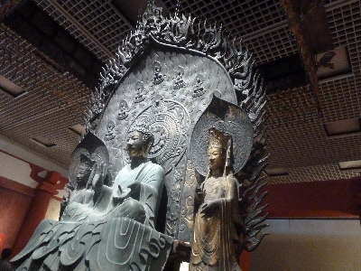
法隆寺 釈迦三尊像です。
クローンですが、本物とは両側の観音様の位置が違うそうです。こちらが本来の形で、本物は設置が間違っている可能性があるそうです。
上の方にあるトゲトゲした飾りは本物にはないですが、痕跡が残っているので想像で復元されています。
まんまコピーじゃないんですね。
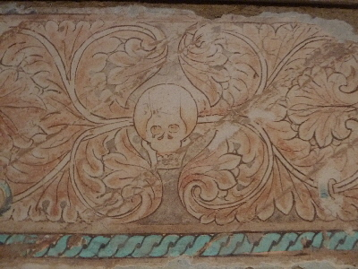
大きな壁画の一部です。このデザインかっこいいって思いました。
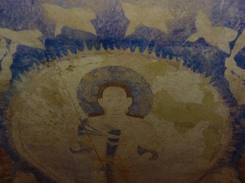
バーミヤンの遺跡はピカピカのクローンではなく、破壊されるまえの状態です。
こうゆうのが実在したんですねー。
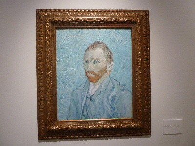
ゴッホの自画像です。
これが一番見たかったです。絵画のクローンてどうなの？本物そのままに出来るの？と興味がありました。
ですが、この絵はバックからゆらゆら揺れる光を当てられ、絵が動いて見えるようになっていました。
まったく別物になってて、期待していたものではありませんでした。
ちょっとがっかりして帰りました。
北斎展は大混雑でした。
2019/03/03
今日はミュージアムデーで入館無料でした。
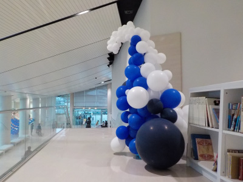
普通に朝とか昼に行ったら満員で、駐車場がないと思ったので夕方になる前くらいに行きました。
でも人が多かったです。
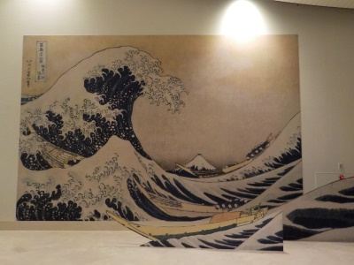
熱心に絵を見られる方が多く、絵に顔を近付けて見られていました。なので後ろから絵を見る事が出来ず、行列に並んで順番に見ないといけまでんでした。
疲れた。
北斎展は展示が多くありました。
色々見れて面白かったです。うん、面白いな。
これらが今後、常設展で見れるかもと思うと楽しみです。
テオ・ヤンセン展を見に行きました。
2023/08/11
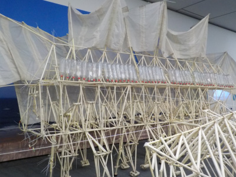
テオ・ヤンセン展は撮影OKです。
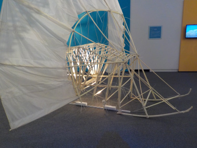
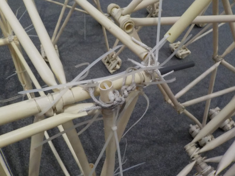
プラスチックの棒が結束バンドで止められています。
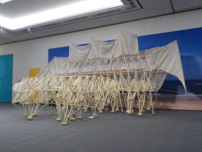
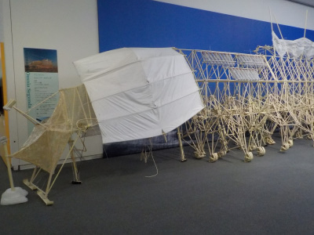
風の力で動く巨大なおもちゃだと思いました。動きが奇妙なので見ていて楽しかったです。
自でも作ってみたいと思いましたが、売店で販売している模型が3000円以上していたのでやめました。小さい子供がいたら買ったかな？
住友コレクション名品選－フランスと日本近代洋画－とロビーコンサート。
2023/09/09
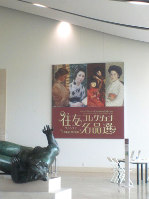
今日は美術鑑賞とロビーコンサートを楽しみました。
両方とも良かったです。いい時間が過ごせました。
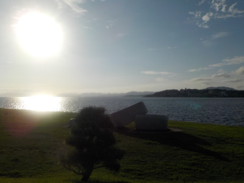
美術館の外に出たら日差しが凄く強かったです。
湖面に光が反射して眩しかったですけど、キラキラで美しかったです。
夕日じゃなくても十分いい景色です。